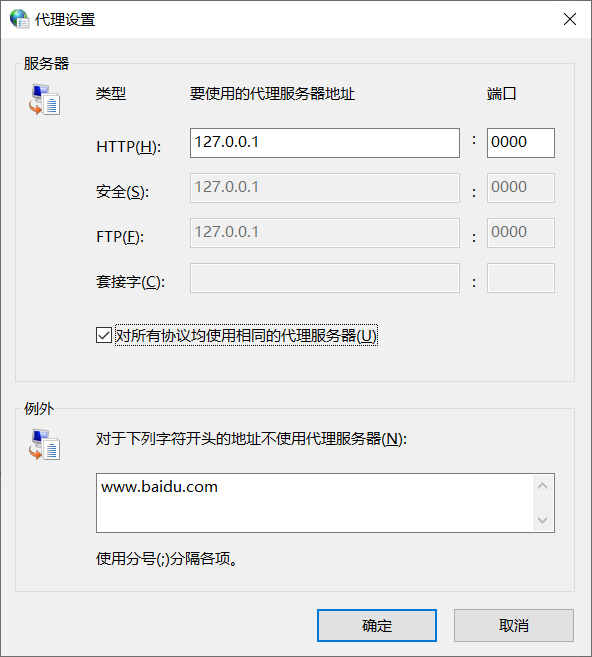

v2ray上网客户端报错问题的解决
大家好呀，鸽了有一个多月。第三篇博客算是千呼万唤始出来呀。不过，之前的还是鸽了。。
那么本次带来的是v2ray的客户端无法科学上网问题的解决方案。
前提摘要
v2ray是一款很好的科学上网的工具，一般分为服务器端和客户端两部分。理论是计算机的问题，那么博主为何会涉及到这方面的问题呢？原来博主的好朋友（友链里的River-li大佬）借给我一个配置好的v2ray服务器端，不过博主客户端配置不太会（博主太笨了。。）设置完代理后总还是无法上网，四处询问无果，不过最后总算是解决了问题，这里分享给大家，让有相同问题的大家少走弯路。
问题出现
首先我们下好v2ray的客户端。
去v2ray官网下载对应系统的安装包。
这里以windows为例。
在确定代理服务器设置（地址和端口）与config.json配置文件一致，运行v2ray.exe启动服务后抛出如下错误：
1 | **** rejected v2ray.com/core/proxy/socks: unknown Socks version: 67 |
同时，无法正常上网。
解决方案
我们在设置代理服务器时，习惯性的选择对所有协议均使用相同的代理服务器
在windows下，这样会使得我们的socks协议栏为空。如图:

而我们的config.json里inbounds中写到：
1 | "protocol":"socks" |
我们需要同步这一选项
修改代理设置
所以我们需要Internet属性中找到局域网（LAN）设置，再找到代理设置、高级里把对所有协议均使用相同的代理服务器前项的√去掉，同时，在socks（套接字）里输入你配置的地址和端口，确定即可。
修改json
我们只需要将json文件中Inbounds中
1 | "protocol":"socks" |
改为
1 | "protocol":"http" |
不论哪种解决方案都可以。
这样我们就可以发现，我们可以正常上网了，v2ray命令行里也变成了accepted，大功告成！
最后还是要感谢River-li大大的技术支持！
Comments